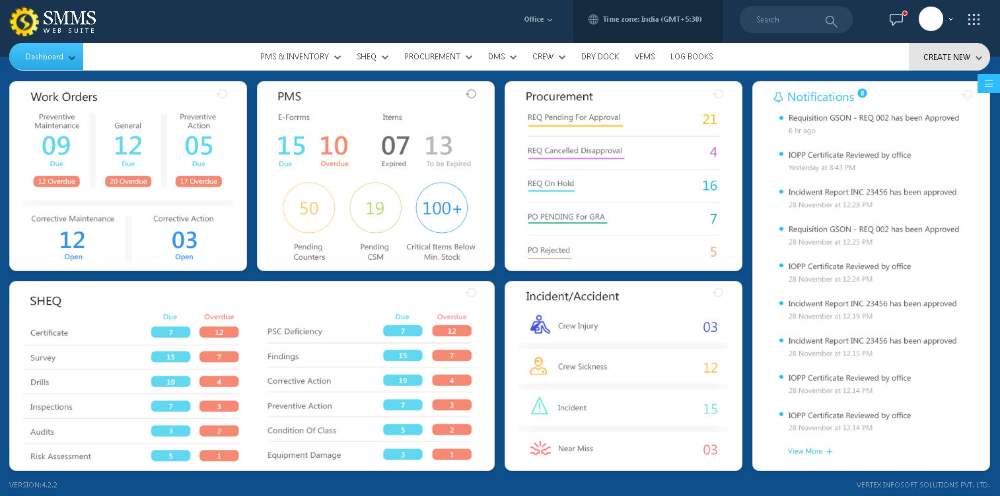

Allow user to create their presets for their work options
Window for Recent Work List
Alerts and Notifications

GUI
Well designed
Easy to navigate and let user retrieve
Information quickly in least clicks
Attractive & user friendly
Futuristic
Highly scalable
Multilingual
Multiple themes for user selection to break the monotonous
Committed to futire change request
Using Latest platform with latest backend database
Compliance with Regulations
Compliance with internal and external regulations as per company SMS and relevant section of ISM codes, SOLAS, MARPOL, STCW, ILO, MLC and other conventions
Uniform Approach
Most of the forms have features which are similar in use in one or other was such as 'Attachments' and 'Comment & Reply'
Powerful Search
A powerful search tool with macro and micro levels